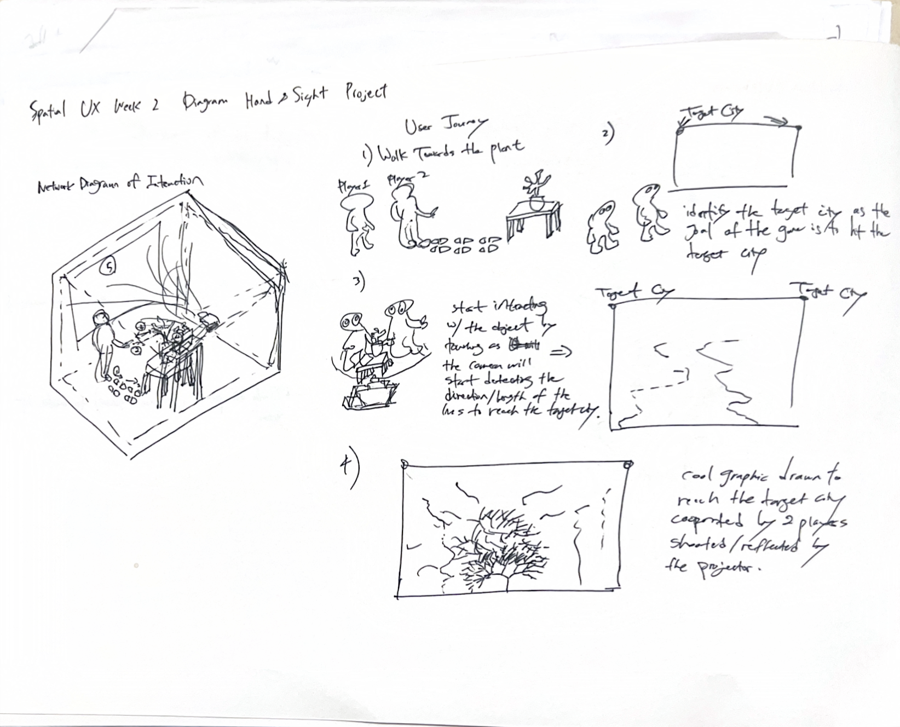
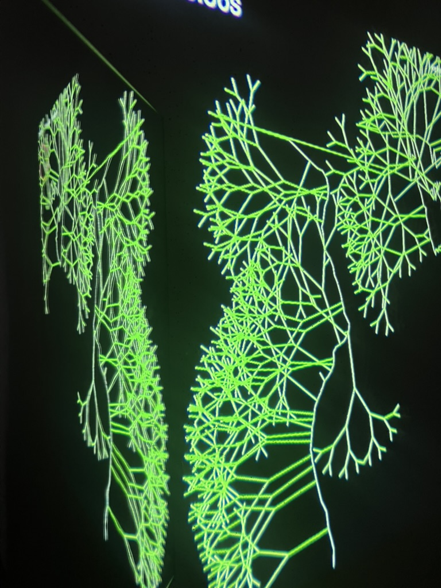
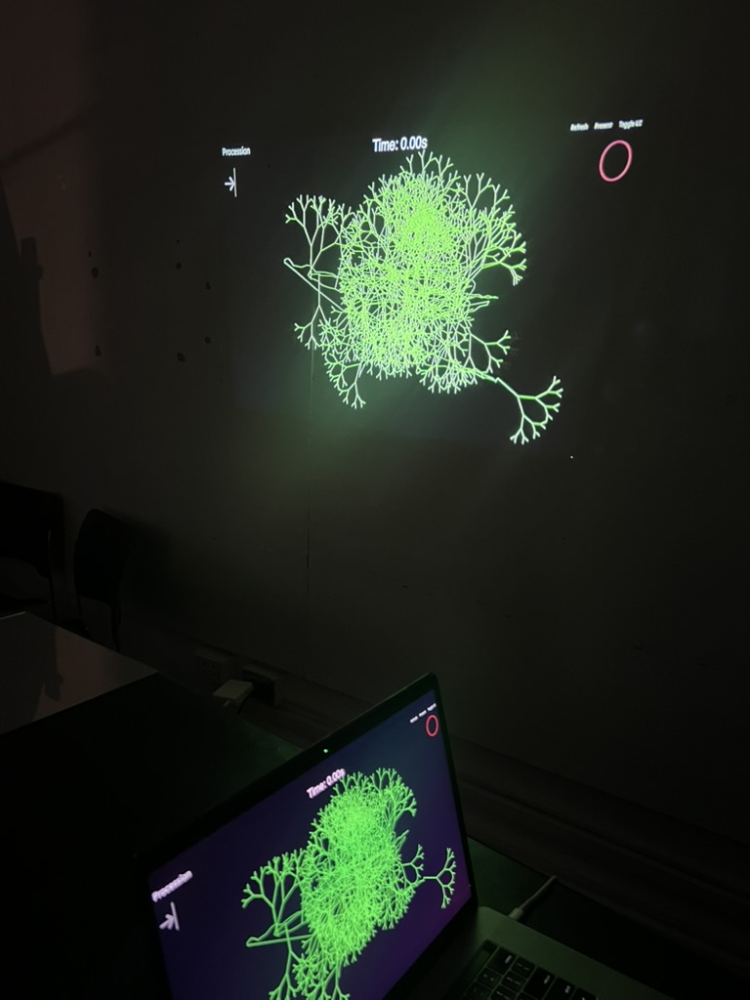
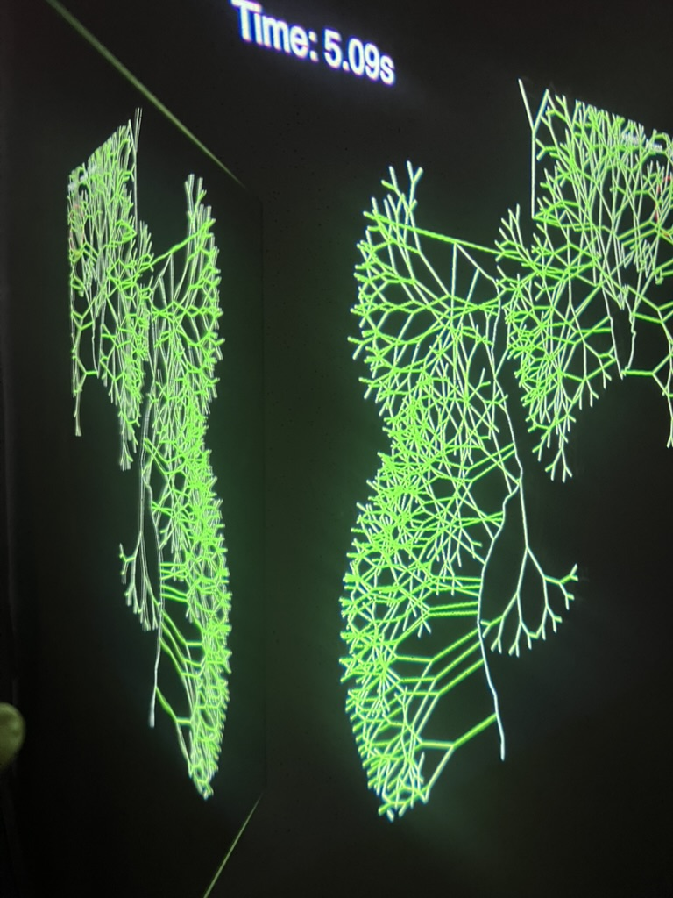

Climate Clock: A Collaborative Urban Greening Game

Inspired by the Union Square Climate Clock that shows the time left to limit global warming to 1.5 degrees
A 2-player plant growing game to prevent irreversible climate change damage with the aim of reaching the target city to plant more greenery to reduce warming
The target represents a generic dense urban area that lacks greenery and natural cooling effects
Two people have to work together to reach the target city with new plantings within 60 seconds
Our game concept was inspired by the climate clock countdown in Union Square, which shows the time left to limit the global warming to 1.5 degrees, which is also considered the point of no return.
We created a 2-player game that takes on this concept and tries to cool dense urban areas by adding vegetation and greenery to reduce warming. The two players work together to try to get the vegetation into the most heated areas before time runs out.
Two players must coordinate their actions and work together effectively to achieve the common goal of urban greening
Identify and target the densest urban areas that lack greenery and would benefit most from vegetation cooling effects
Complete the greening mission within 60 seconds, mirroring the urgency of real-world climate action
Raise awareness about urban heat islands and the critical role of green infrastructure in combating climate change



The 60-second time limit creates a sense of urgency that reflects the real-world climate crisis timeline
Requiring two players emphasizes that climate action needs collective effort and collaboration
Simple mechanics make the game approachable while delivering a powerful message about climate action
Players can see immediate visual feedback of their greening efforts on the urban landscape
Dense urban areas often experience significantly higher temperatures than surrounding regions due to lack of vegetation and abundance of heat-absorbing surfaces. This phenomenon, known as the urban heat island effect, contributes to increased energy consumption, poor air quality, and health risks.
Adding vegetation and green spaces to cities can reduce temperatures by 2-5°C through evapotranspiration and shade provision. Trees and plants also improve air quality, manage stormwater, enhance biodiversity, and create healthier, more livable communities.
The Union Square Climate Clock represents the critical deadline to limit global warming to 1.5°C above pre-industrial levels. Beyond this threshold, we risk triggering irreversible tipping points in Earth's climate system. Our game translates this global challenge into actionable, local intervention.
This spatial/interactive game design project demonstrates how game mechanics can be leveraged to communicate urgent environmental messages. By combining the time pressure of the Climate Clock with collaborative gameplay, we create an experience that is both engaging and educational. Players don't just learn about climate change—they actively participate in a solution, understanding that every second counts and that working together is essential for meaningful impact.